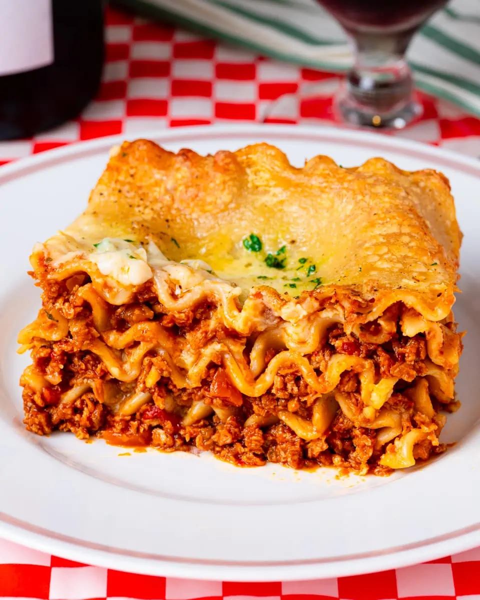

Lasagna

Description
Indulge in the ultimate comfort food with this mouthwatering
vegan lasagna. Packed with layers of flavor and wholesome ingredients,
it's a satisfying and nutritious twist on the classic Italian dish.
Perfectly cooked lasagna noodles are lovingly embraced by a rich
marinara sauce, which is beautifully complemented by a medley of
sautéed veggies including bell peppers, zucchini, mushrooms, and
spinach. The filling consists of crumbled tofu blended with nutritional
yeast, adding a delightful touch of creaminess and a hint of cheesiness.
Topped with a generous sprinkle of vegan mozzarella, this lasagna emerges
from the oven with a golden, bubbly perfection that will have everyone's
taste buds singing with joy. Whether you're a vegan or simply looking
for a delicious plant-based meal, this vegan lasagna will win hearts
and stomachs alike.
Welcome to a culinary journey that combines the warmth of
home-cooked goodness with the vibrant flavors of fresh vegetables.
This vegan lasagna recipe invites you to create a masterpiece
that celebrates the beauty of plant-based ingredients. With each
layer, you'll experience the harmonious blend of textures and aromas,
as well as the satisfaction of nourishing your body with wholesome
goodness. From the sautéed veggies to the flavorful marinara sauce,
and the protein-packed tofu filling, every bite is a symphony of taste
and a celebration of cruelty-free dining. So gather your ingredients,
preheat your oven, and embark on a delightful adventure that will leave
you craving seconds. Get ready to savor the deliciousness of this vegan
lasagna while impressing your loved ones with a dish that proves that
plant-based cooking can be both indulgent and soul-satisfying.
Ingredients
- 9 lasagna noodles
- 2 cups marinara sauce
- 1 tablespoon olive oil
- 1 onion, chopped
- 3 cloves of garlic, minced
- 1 bell pepper, chopped
- 1 zucchini, sliced
- 8 ounces (225g) mushrooms, sliced
- 2 cups baby spinach
- Salt and pepper to taste
- 1 block (14 ounces) firm tofu, drained and crumbled
- 1/4 cup nutritional yeast (optional)
- 1 cup vegan mozzarella cheese, shredded
Steps
- Preheat your oven to 375°F (190°C). Cook the lasagna noodles according to the package instructions. Drain and set aside.
- In a large skillet, heat olive oil over medium heat. Add the onion and garlic, and sauté until translucent and fragrant.
- Add the bell pepper, zucchini, and mushrooms to the skillet. Cook for about 5 minutes until the vegetables are tender.
- Stir in the baby spinach and cook for an additional 2 minutes until wilted. Season with salt and pepper to taste.
- In a separate bowl, combine the crumbled tofu and nutritional yeast. Mix well to coat the tofu with the nutritional yeast.
- Spread a thin layer of marinara sauce in the bottom of a 9x13-inch baking dish. Place 3 lasagna noodles on top, slightly overlapping them.
- Spread half of the tofu mixture evenly over the noodles, followed by half of the sautéed vegetables. Repeat this process with another layer of noodles, tofu mixture, and vegetables.
- Place the final layer of noodles on top and spread the remaining marinara sauce over the noodles. Sprinkle vegan mozzarella cheese evenly over the top.
- Cover the baking dish with foil and bake in the preheated oven for 25 minutes. Then, remove the foil and bake for an additional 10 minutes until the cheese is melted and bubbly.
- Once cooked, remove the lasagna from the oven and let it cool for a few minutes before serving.